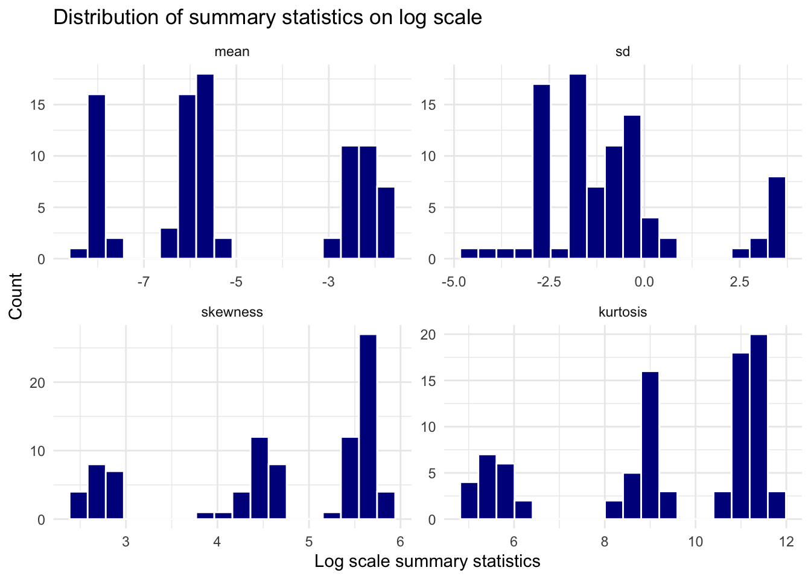
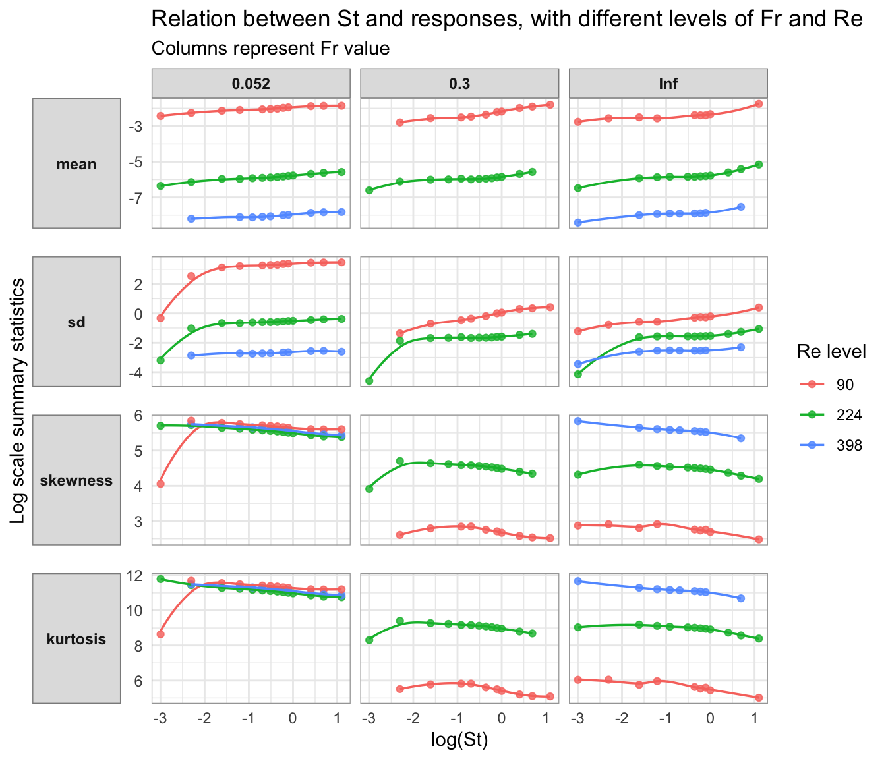

library(tidyverse)
train_path <- "data/data-train.csv"
raw <- readr::read_csv(train_path, na = c("", "NA"), show_col_types = FALSE)
required <- c("St", "Re", "Fr", paste0("R_moment_", 1:4))
stopifnot(nrow(raw) == 89L, identical(names(raw), required))
stopifnot(all(vapply(raw, is.numeric, logical(1))))STA 325 Turbulence Case Study: Data Validation and EDA
Data Processing
We see that the existing data contains predictor values collected at different levels, instead of continuous values. It includes a valid infinity value for one of the predictors that is not a result of missing data. We compute standard deviation, skewness, and kurtosis from raw moments.
# predictor value distribution
level_table <- function(x, nm) {
tibble(level = as.character(x)) |>
count(level, name = "n") |>
mutate(predictor = nm, .before = 1)
}
predictor_levels <- bind_rows(level_table(raw$Re, "Re"),
level_table(raw$Fr, "Fr"),
level_table(raw$St, "St"))
print(predictor_levels)# A tibble: 20 × 3
predictor level n
<chr> <chr> <int>
1 Re 224 39
2 Re 398 19
3 Re 90 31
4 Fr 0.052 36
5 Fr 0.3 23
6 Fr Inf 30
7 St 0.05 6
8 St 0.1 6
9 St 0.2 7
10 St 0.3 7
11 St 0.4 6
12 St 0.5 6
13 St 0.6 5
14 St 0.7 7
15 St 0.8 7
16 St 0.9 8
17 St 1 5
18 St 1.5 6
19 St 2 7
20 St 3 6# compute central moments
m1 <- raw$R_moment_1
m2 <- raw$R_moment_2
m3 <- raw$R_moment_3
m4 <- raw$R_moment_4
analysis <- raw |>
mutate(
variance = m2 - m1^2,
mean = m1,
sd = sqrt(variance),
central_moment_3 = m3 - 3 * m2 * m1 + 2 * m1^3,
central_moment_4 = m4 - 4 * m3 * m1 + 6 * m2 * m1^2 - 3 * m1^4,
skewness = central_moment_3 / sd^3,
kurtosis = central_moment_4 / sd^4
)response_names <- c("mean", "sd", "skewness", "kurtosis")
response_summary <- analysis |>
summarise(across(all_of(response_names),
list(min = min, q1 = ~ quantile(.x, .25), median = median,
mean = mean, q3 = ~ quantile(.x, .75), max = max,
sd = sd))) |>
pivot_longer(everything(), names_to = c("response", ".value"), names_pattern = "(.*)_(min|q1|median|mean|q3|max|sd)")
print(response_summary)# A tibble: 4 × 8
response min q1 median mean q3 max sd
<chr> <dbl> <dbl> <dbl> <dbl> <dbl> <dbl> <dbl>
1 mean 0.000222 0.00216 0.00296 0.0404 8.79e-2 1.72e-1 5.58e-2
2 sd 0.0101 0.156 0.284 3.65 7.26e-1 3.23e+1 8.95e+0
3 skewness 12.0 72.5 110. 163. 2.70e+2 3.45e+2 1.13e+2
4 kurtosis 151. 5622. 12159. 39750. 7.27e+4 1.32e+5 3.81e+4Exploratory data analysis
predictor_dist <- analysis |>
mutate(Fr_condition = if_else(is.infinite(Fr), "Inf", as.character(Fr))) |>
group_by(Re, Fr_condition) |>
summarise(n = n(),
St_min = min(St),
St_max = max(St),
St_levels = n_distinct(St), .groups = "drop")
print(predictor_dist)# A tibble: 8 × 6
Re Fr_condition n St_min St_max St_levels
<dbl> <chr> <int> <dbl> <dbl> <int>
1 90 0.052 12 0.05 3 12
2 90 0.3 10 0.1 3 10
3 90 Inf 9 0.05 3 9
4 224 0.052 14 0.05 3 14
5 224 0.3 13 0.05 2 13
6 224 Inf 12 0.05 3 12
7 398 0.052 10 0.1 3 10
8 398 Inf 9 0.05 2 9Response scales and associations within observed support
Histograms on both original and log scales address skew and candidate response transformations. The conditional plots assess whether the response changes with St, whether curvature is plausible, and whether observed trends differ by Re or Fr. Log axes are used only for strictly positive responses. Smooths are descriptive LOESS fits within the observed Re–Fr facets, not inferential tests.
response_long <- analysis |>
select(Re, Fr, St, all_of(response_names)) |>
pivot_longer(all_of(response_names), names_to = "response", values_to = "value") |>
mutate(Fr_condition = if_else(is.infinite(Fr), "Inf", as.character(Fr)),
log_value = log(value),
log_St = log(St),
response = fct_relevel(response, "mean", "sd", "skewness", "kurtosis"))
ggplot(response_long, aes(log_value)) +
geom_histogram(bins = 18, color = "white", fill = "darkblue") +
facet_wrap(~ response, scales = "free") +
labs(x = "Log scale summary statistics",
y = "Count",
title = "Distribution of summary statistics on log scale") +
theme_minimal()
ggplot(response_long, aes(log_St, log_value, color = factor(Re))) +
geom_point(alpha = .8) +
geom_smooth(method = "loess", formula = y ~ x, se = FALSE, linewidth = .6) +
facet_grid(rows = vars(response), cols = vars(Fr_condition), scales = "free_y",
switch = "y") +
labs(x = "log(St)",
y = "Log scale summary statistics",
color = "Re level",
title = "Relation between St and responses, with different levels of Fr and Re",
subtitle = "Columns represent Fr value") +
theme_minimal() +
theme(
panel.border = element_rect(color = "grey65", fill = NA, linewidth = .45),
panel.spacing.y = grid::unit(1.1, "lines"),
strip.placement = "outside",
strip.background = element_rect(fill = "grey88", color = "grey55"),
strip.text.y.left = element_text(face = "bold", angle = 0),
strip.text.x = element_text(face = "bold")
)